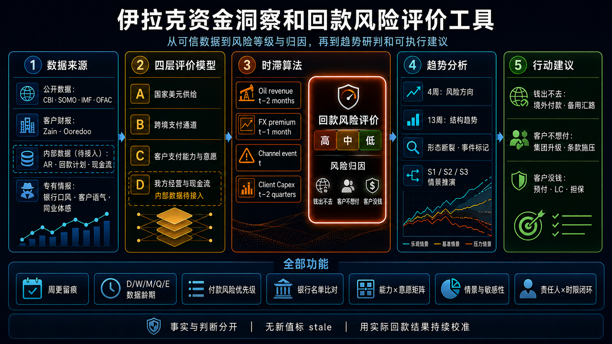

Iraq Representation Office · Treasury Intelligence
已接入 32 个来源 · CBI周报 + OCR评分工作台 v12
内部参考 · 财经密级🇮🇶 伊拉克资金洞察风险方向：恶化 ↑扫描财报 OCR · 上传核验评分已融合
当前回款风险：高，
主因是“钱出不去”
工具综合国家美元供给、跨境支付通道和客户付款能力进行评价，付款意愿单独作为定性归因。最新公开证据显示：巴格达现钞售汇价较 CBI 官方价溢价约 18.7%，霍尔木兹状态升至 CRITICAL，且 OFAC 新增土耳其银行制裁。客户付款能力现改用 10 个核心指标、100 分模型；Asiacell 与 Zain Iraq 的扫描财报已由本地 OCR 提取并完成财务勾稽，但我方 AR、受限现金及部分会计口径仍待确认，因此 C 层暂不输出最终评级。
⚠
本周唯一最重要动作：把伊拉克境内 FX 转出风险转移给客户集团。
要求 Zain Group / Ooredoo Group 确认境外账户或集团层面 USD 付款路径，并同时完成三类往来银行名单比对；土耳其路径新增 OFAC 筛查。
COLLECTION RISK高风险指数 30 / 100仅 A/B · 模型变更不可比
关键风险指标
频率与龄期并列显示；未取到新值即 stale，不做外推
总分暂不含内部经营层
回款风险等级W
高风险风险方向：恶化 ↑ · 30 / 100
仅 A/B 归一化；C 层 10 指标待输入
油收覆盖刚性支出M
0.18×低于 0.8 红线
stale · 油收截至 2026-06 · 月均 $1.168bn ÷ $6.5bn
霍尔木兹状态D
CRITICAL9/5 上调 · 通行受限
Lloyd's：8/26–9/1 约 12 次/日；不同口径不可直接相加
IQD 平行溢价D
18.7%红档 >15% · 较9/2走阔 0.6pp
1,555 vs 1,310 · 2026-09-06
受限 / 黑名单银行E
28 + 4链路集中度高
CBI 2026-02-22 官方名单
Asiacell EBITDA marginQ
46%经营韧性辅助信号
stale · Q2 2026 · 不替代 10 指标评级
Asiacell Capex / RevQ
9%从 Q4 34% 断崖下行
stale · Q2 2026 · 付款意愿领先信号
内部 AR / 现金覆盖待接入
—内部数据尚未提供
虚线框表示该指标不参与本期评价
回款风险评价结果
评分用于比较风险强弱与定位原因，不估计回款天数
分数越低，风险越高
A · 国家美元供给34 / 高风险海峡升至 CRITICAL、油收旧值 stale
B · 跨境支付通道25 / 高风险溢价走阔、土耳其路径新增 OFAC 风险
C · 客户付款能力6 / 10 已填Asiacell 覆盖 65% · Zain Iraq 覆盖 60% D · 我方经营与现金流— / 待接入内部数据缺失，不参与评分 当前风险指数：30 = 50% × A34 + 50% × B25（四舍五入）。C 层已预填两家运营商公开财报可计算指标，但 10 项未齐前不参与总分；付款意愿保留为定性归因。风险方向仍为恶化，但 30 分与上一版 40 分因口径变化不可直接比较。
CBI 每周核心数据分析
本周快照截至 2026-09-10；日频、周频、月频与事件驱动分开，不用旧月度值冒充周度更新
官方站为主源 · Facebook 作发布速度交叉核验
CBI 官方 USD / IQDD
1,310本周观察值不变
2026-09-10 检查 · 官方牌价不等于实际可获得美元
银行系统流动性比率E
>60%CBI 系统口径
流动资产 ÷ 短期负债 · 2026-09-05；不可外推到单家银行
最新 7 天央行票据W
5.25%W524 · 期限 7 天
2026-09-08 执行；表示短期流动性操作活跃
下一观察点E
B359期限 14 天 · 9/13 执行
公告未披露传统票据利率；等待结果，不预填
| CBI 主题 | 最新官方披露 | 日期 / 频率 | 本周变化 | 与回款的关系 | 状态 |
|---|
| 官方汇率 | 1 USD = 1,310 IQD | 2026-09-10 检查 · D | 较本周前值不变 | 官方换汇基准稳定，但不能证明客户或银行可及时取得并汇出 USD。 | 稳定 |
| 公开市场操作 | W524：7 天、5.25%；B359：14 天、9/13 执行 | 2026-09-06 / 09 · W/E | 短期票据继续发行 | 反映 CBI 正在管理银行体系 IQD 流动性；不是外汇可得性的直接证据。 | 观察 |
| 银行体系流动性 | 流动资产 / 短期负债超过 60% | 2026-09-05 · E | CBI 新增官方口径 | 减弱“全系统无流动性”判断；不替代付款行、代理行的单体核验。 | 缓冲 |
| Al-Taif Bank | 9/3 被接管；9/8 表示提款及履约将按监管优先级逐步安排，工资优先 | 2026-09-03–08 · E | 监管处置升级 | 若付款链路涉及该行，回款时点存在直接延迟风险，应立即切换或核验替代银行。 | 高风险 |
| 外汇机构许可 | 9/6 撤销 3 家 A 类兑换公司许可；9/7 再撤销 1 家经纪公司许可 | 2026-09-06–07 · E | 本周共 4 家 | 表明合规清理仍在推进；非银行换汇渠道的连续性和可用性承压。 | 收紧 |
| CBI 资产负债表 | 官网最新可见月份为 2026-06 | 2026-06 · M | 本周无新月表 | 储备、资产和负债基线继续标 stale；未发布时不作周度外推。 | stale |
| 货币与金融变量报告 | 官网最新可见报告为 2026-01 | 2026-01 · M | 本周无新版 | 货币量、政府收支与储备分析只能作为旧基线，不用于当周流动性结论。 | stale |
| 官方 Facebook | 最新公开帖：关于 Al-Taif Bank 存款的特别声明；与官网 9/8 内容一致 | 2026-09-08 · E | 已纳入小时级扫描 | 用来更快发现监管信号；正式判断仍回链 CBI 官网原文。 | 已接入 |
周报口径：每周汇总日频与事件数据；月度/季度项目只在 CBI 发布新文件时更新。Facebook 受 Meta 登录及页面结构变化影响，可能短时不可读，因此只作发现与交叉核验渠道，CBI 官网始终是最终依据。
客户付款能力评分模型
10 个核心指标 · 权重合计 100% · 数据完整后自动评级
好＝100 · 一般＝60 · 风险＝0
| # | 维度 | 指标与公式 | 权重 | 好 | 一般 | 风险 | 当前状态 |
|---|
| 01 | 现金 | Cash / Current Liabilities现金及现金等价物 ÷ 流动负债 | 15% | >30% | 15–30% | <15% | 待输入 |
| 02 | 流动性 | Current Ratio流动资产 ÷ 流动负债 | 10% | >1.5x | 1.0–1.5x | <1.0x | 待输入 |
| 03 | 经营现金流 | CFO / Current Liabilities经营现金流 ÷ 流动负债 | 10% | >30% | 10–30% | <10% | 待输入 |
| 04 | 自由现金流 | FCFCFO − Capex | 15% | >0 | 接近 0 | <0 | 待输入 |
| 05 | 现金转化 | CFO / EBITDA经营现金流 ÷ EBITDA | 10% | >70% | 40–70% | <40% | 待输入 |
| 06 | 杠杆 | Net Debt / EBITDA（有息负债 − 现金）÷ EBITDA | 10% | <2x | 2–3x | >3x | 待输入 |
| 07 | 偿债 | Interest CoverageEBITDA ÷ 利息费用 | 10% | >5x | 2–5x | <2x | 待输入 |
| 08 | 回款 | DSO应收账款 ÷ Revenue × 365 | 5% | <60 天 | 60–90 天 | >90 天 | 待输入 |
| 09 | 供应商付款 | Payable Days应付账款 ÷ COGS × 365 | 5% | <90 天 | 90–120 天 | >120 天 | 待输入 |
| 10 | 我方风险敞口 | Our AR / Available Cash我方 AR ÷ 可动用现金 | 10% | <20% | 20–40% | >40% | 待输入 |
两个运营商已取得指标
页面加载后自动读取 H1 2026 已复核财报数据；“待补”表示公开信息不足或口径未确认。
Asiacell · 加载中Zain Iraq · 加载中
| # | 指标 | Asiacell | Zain Iraq |
|---|
| 正在载入已核验指标…… |
Asiacell 当前可计算 6/10 项（覆盖权重 65%），Zain Iraq 可计算 6/10 项（覆盖权重 60%）。债务分类、可动用现金、Asiacell 利息与 COGS、Zain EBITDA 口径，以及两家的我方 AR 仍待复核或补入，因此不强行生成最终总分。
扫描财报 OCR 与核验
本地阿拉伯文/英文识别 · SHA-256 锁定 · 财务勾稽
默认脱敏输出
默认不保存整页 OCR 文字、不打包源扫描 PDF、不调用云端 OCR，也不需要 API Key。输出仅保留财务科目、页码、识别置信度、核验方法和状态；源文件哈希变化后，内置复核值会自动降为待复核。
一体化 OCR 评分工作台
上传扫描 PDF → 本地识别 → 证据复核 → 10 项评分 → Red Flag 降级
等待财报上传后将在这里显示主体、哈希匹配、核验数量和评分完整度。
CFO 回款风险矩阵
把风险、关注指标、当前信号与管理动作放在同一张表中
红 4 · 黄 3 · 待接入 1
风险关注指标风险灯CFO 动作
美元流动性A · 国家美元供给
CBI FX reservesstale · 公开基线 $86.2bn · 截至 2026-06
关注
周度联看储备、油收和汇率溢价储备值无更新时标 stale，不单凭存量判断支付能力
石油出口路线A · 外汇流入物理通道
Hormuz status / Iraq shipments9/5 CRITICAL · 8月伊拉克油运较战前基线低 36%（媒体代理）
高风险
准备北向及境外集团付款替代路径海峡已转弱，立即升级资金预案；等待 SOMO 官方月度总量确认
财政风险A · 付款优先级挤压
Oil revenue / rigid expenditure油收覆盖刚性支出约 0.18×
高风险
不依赖本地财政改善作为回款前提把集团付款、预付和担保作为合同与催收主路径
银行与通道风险B · 跨境美元转移
USD transfer availability28家受限 + 4家黑名单；9/4 OFAC 新增土耳其银行制裁
高风险
两日内完成收款行、付款行、代理行比对土耳其备用路径必须新增 SDN、所有权与代理行筛查
客户付款能力C · 10 指标 / 100 分
Liquidity, cash flow, leverage and exposure两家运营商均已填入 6/10 项；Asiacell 覆盖 65%，Zain Iraq 覆盖 60%
部分完成
复核债务/现金口径并补入我方 AR已核验值已自动生效；待复核或缺失项不会按 0 分处理
我方 AR 风险D · 内部数据待接入
账龄 / 逾期 / 计划兑现率AR 总额、90+、计划与实收尚未提供
待接入
先补数据，暂不强行判红接入分客户 AR、逾期账龄与本月实收后参与评分
Capex 与付款意愿C · 客户支付意愿
Operator CAPEX / RevenueAsiacell Q2 为 9% · 较 Q4 34% 明显下降
关注
新订单采用里程碑付款或担保结算Capex 收缩视为付款排序信号，不等同于客户没钱
IQD 贬值与兑换B · 本币换汇压力
Official / parallel spread1,555 vs 1,310 · 溢价 18.7% · 2026-09-06
高风险
锁定 USD 计价与汇率风险转移条款溢价维持红档时优先安排境外账户或集团层面付款
红：7日内行动黄：持续监控并准备预案绿：保持策略虚线：内部数据待接入
这个评价工具如何工作
数据来源 → 四层模型 → 10 指标能力评分 → 趋势分析 → 分因施策

当前口径以本页 10 指标客户付款能力模型为准；框架图保留整体流程。公开事实与管理判断分开；缺失项保持待评估，不按 0 分处理。
周更留痕旧快照只追加不覆盖，记录关键变化与行动状态
数据龄期D/W/M/Q/E + 截止日；无新值明确标 stale
付款风险优先级从工资养老金到外国 ICT 供应商逐层判断挤压
银行名单比对收款行、客户付款行、代理行逐一匹配 CBI/OFAC
10 指标能力评分现金、流动性、现金流、杠杆、账期和我方敞口合计 100 分
Red Flag 降级任一重大红旗触发，最终评级至少下降一级
4周/13周趋势短期风险方向、结构趋势、形态断裂与事件标记
分因建议闭环按风险归因匹配动作、责任人、时限与复盘
风险驱动分解
优先级由高到低
01
美元清算链路与合规摩擦28 家银行限制美元交易，另有 4 家黑名单；9/4 OFAC 对土耳其银行的新行动使备用路径筛查更紧迫。
高
02
石油出口路线脆弱性霍尔木兹 9/5 升至 CRITICAL；8 月伊拉克油运据媒体代理较战前基线低 36%，SOMO 官方月度总量仍 stale。
高
03
客户付款优先级下降Asiacell H1 Capex 同比下降 44%，EBITDA margin 维持 45%；这是付款排序信号，不是完整能力评级。
中高
04
运营商经营利润仍有韧性Zain Iraq H1 收入 +10%、EBITDA +5%；完整能力评分仍需 CFO、资产负债表、利息和 AR 数据。
辅助
CFO 应如何解读
不是“坏账判断”
客户能力尚未完成评级经营利润仍有韧性，但 10 项输入未齐。不能仅凭 EBITDA 或回款变慢下偿付能力结论。
是通道 + 优先级正确处方是 境外付款、集团升级、指定收款行，而不是只靠催收频率。
新订单与存量回款要分开Capex 冻结预警的是未来订单与付款排序；存量 AR 是否恶化，待内部计划完成率、账龄和实收流水接入后验证。
当前回款风险：高风险 · 方向恶化A/B 两层同时落入高风险，海峡状态、汇率溢价与 OFAC 新行动共同强化“钱出不去”的判断。C 层等待 10 指标输入，优先解决付款路径与集团升级，不推算具体到账日期。
趋势与结构
图表均标注事实口径；情景只用于风险研判，不混入实绩
四层风险评分
模型口径 · 2026-09-09总分A 国家供给B 支付通道C 客户能力待评估
C/D 暂缺，30 分为 A/B 等权归一化结果；模型变化使该值与上一版 40 分不可直接比较。
储备：实际基线 vs IMF 路径
USD bn公开/CBI基线IMF 预测路径
4 月出口路线结构
9.884m 桶Basra 46.4%Kirkuk–Ceyhan 50.2%KRG 3.4%
官方 vs 平行汇率
IQD / USDCBI 官方 1,310巴格达售汇 1,555
Asiacell 季度经营轨迹
QAR mnRevenueEBITDACapex
Capex / Revenue 断崖
Asiacell · %季度 Capex 强度红线 <8%
Q3 2025 33% → Q4 34% → Q1 2026 8% → Q2 9%；自由现金改善与付款意愿转弱可同时发生。
每周风险预警与留痕
后台每周日 12:00（Asia/Baghdad）生成新快照；只追加，不覆盖历史
主值＝风险等级｜辅值＝风险指数
| 周次 | 截止日 | 风险等级 | 风险指数 | A / B / C / D | 4周 / 13周 | 风险归因 | 关键变化 | 行动闭环 |
|---|
| W37·模型升级 | 2026-09-09 | 高风险
方向：恶化 ↑ | 30 / 100
口径不可比 | 34 / 25 / — / — | 恶化 ↑ / —
13周样本不足 | 主：钱出不去
次：客户不想付
能力：待评估 | C 层切换为 10 指标、100 分模型；数据未齐不评分。 | ⏳ 补齐能力模型输入
⏳ 三类银行名单比对 |
| W36·周更 | 2026-09-06 | 高风险
方向：恶化 ↑ | 40 / 100 | 34 / 25 / 70 / — | 恶化 ↑ / —
13周样本不足 | 主：钱出不去
次：客户不想付
无证据：客户没钱 | 海峡升至 CRITICAL；平行溢价至 18.7%；OFAC 新增土耳其银行制裁。 | ⏳ Layer D 8项
⏳ 三类银行名单比对
⏳ 土耳其路径重筛 |
| W36·当前口径 | 2026-09-03 | 高风险 | 44 / 100 | 40 / 31 / 70 / — | → / →
样本积累中 | 主：钱出不去
次：客户不想付 | 模型改为风险评价，不再估计回款天数；内部 D 层保持缺失。 | ⏳ Layer D 8项
⏳ 三类银行名单比对 |
| W36·公开数据刷新 | 2026-09-02 | 高风险 | 44 / 100 | 40 / 31 / 70 / — | → / →
样本不足 | 主：钱出不去
次：客户不想付 | 巴格达售汇升至1,547.5、CBI官方价1,310，溢价走阔至18.1%。 | ⏳ Layer D 8项
⏳ 三类银行名单比对 |
| W36·初始基线 | 2026-09-03 | 高风险 | 44 / 100 | 40 / 31 / 70 / — | — / — | 钱出不去
客户不想付 | 保留为方法升级前基线，不展示旧天数估计。 | 风险模型已启用 |
付款优先级队列
真正的问题不是“国家有没有钱”，而是外国 ICT 供应商排在第几位
01 · 已失守工资与养老金7月多个部委欠薪；强滞后确认信号
02 · 刚性能源与粮食民生优先，付款顺位不让渡
03 · 刚性地缘付款邻国电力、天然气等刚性支出
04 · 承压债务与举债财政缺口挤压后续顺位
05 · 承压国企与承包商本地运营付款优先于外国供应商
06 · 我方外国 ICT 供应商队尾；工资延迟意味着我方早已承压
客户财务健康
公开经营指标仅作辅助；正式付款能力评级使用 10 指标模型
Z
Zain Iraq
Zain Group 持股 76% · stale · Q2 20266/10 · 覆盖 60%正式评级尚缺 4 项
Q2 Revenue$334m
Q2 EBITDA$122m
Margin37%
H1 Revenue YoY+10%
H1 EBITDA YoY+5%
Customers20.4m
6项已进入模型
意愿信号偏弱
施压区
4项待复核/补入
Red Flag 待核验
A
Asiacell
Ooredoo Iraq · stale · Q2 20266/10 · 覆盖 65%正式评级尚缺 4 项
Q2 RevenueQAR 1,416m
Q2 EBITDAQAR 645m
Margin46%
Capex / Rev9%
EBITDA−Capex proxyQAR 516m
Customers20.153m
6项已进入模型
意愿信号偏弱
施压区
4项待复核/补入
Red Flag 待核验
链路状态灯
内部名称待输入我方在伊收款行未提供银行名称，无法比对 CBI 名单待验证
客户指定付款行Zain / Asiacell 付款行待财务确认待验证
土耳其备用路径9/4 OFAC 制裁 Golden Global Bank 及两家子公司重筛
制裁与合规雷达
事件驱动 ETR
2026-09-04 土耳其银行与子公司OFAC 指定 Golden Global Bank 及两家子公司；任何土耳其中转路径均需重新做 SDN、50% 规则与代理行筛查。
FX
2026-08-07 伊朗影子银行网络虽非直接针对我方链路，但与伊拉克跨境资金审查环境高度相关。
内部数据层（待接入）
以下字段尚未提供，以虚线框展示；当前评价不会假装拥有这些数据
Layer D · 不参与本期评分
我方 AR按客户、币种与账龄
客户可动用现金与受限现金分开
客户 CFO / Capex同一报告期与口径
流动资产 / 负债完整资产负债表
有息负债 / 利息净债务与利息覆盖
客户 AR / AP / COGS用于 DSO 与 Payable Days
Red Flag 证据连续期数、到期表、审计意见
数据来源与截止日每项输入均需留痕
10 项指标全部有效且 5 项 Red Flag 均完成核验后才输出客户付款能力最终评级；缺失输入不会按 0 分处理。
未来 13 周情景
概率为管理判断区间，不是统计预测
S1 缓解北向路线增强、Basra 逐步恢复且平行溢价回落至15%以下；通道风险缓解，整体风险有机会降至中等。20–30%
S2 当前压力海峡维持 CRITICAL、溢价停留红档且工资队列继续承压；“钱出不去”主因延续，整体保持高风险。50–60%
S3 尾部链路银行命中制裁、IQD 法定贬值或 Basra 中断 >14 天；风险升至极高并可能阶段性冻结付款。15–25%
贬值敏感性：若官方汇率从 1,310 向巴格达现钞售汇价 1,555 靠拢，客户偿付同额 USD 应收的 IQD 成本约上升 18.7%。因缺少我方 AR 金额，暂不能量化公司现金敞口。情景概率为管理判断，不是预计到账时间。
执行清单
按“本周 / 30天 / 结构性”分层；每项绑定责任人和时限
本周必做
完成三类银行名单比对收款行 / 客户付款行 / 代理行逐项对 CBI 28+4Treasury · 2个工作日
推动集团或境外付款Zain Group、Ooredoo Group 确认 USD 付款路径客户经理 + CFO · 5日
复核 OCR 被拦截字段确认债务计息范围、受限现金、Asiacell 利息/COGS，并补入我方 ARAR Owner + Finance · 周五前
30 天内
建立两条备用汇路约旦 / 阿联酋路径优先；土耳其路径完成 OFAC 重筛后方可计入Treasury · 30日
标准化合规包合同、发票、报关/验收、受益人 KYC 一次齐套Finance Ops · 14日
按客户设 AR 上限单一客户超过 50% 时，新单升级地区部审批CFO · 月内
结构性保护
新大单改为担保结算confirmed L/C、SBLC、预付或母公司担保Commercial + Legal
补充不可兑换条款currency inconvertibility / transfer restrictionLegal · 新合同起
复核 Sinosure 限额核对国别、买方和政治风险承保可用性Risk · 季度
数据源与证据链
官方源、监管源、周频物理代理与媒体交叉验证分层呈现